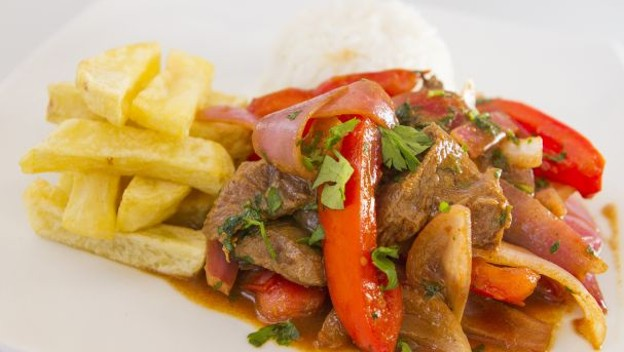
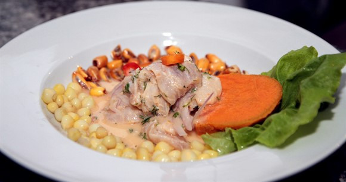

Favoritos


El Perú fue elegido el 'Mejor Destino Culinario' del mundo 23/diciembre/2018
Por sexto año consecutivo, el Perú recibió el reconocimiento de ‘Mejor Destino Culinario’ del mundo. Asimismo, el complejo arqueológico de Machu Picchu, en Cusco, fue premiado como ‘Mejor Atracción Turística’ en la última edición de los World Travel Awards (WTA), que se llevó a cabo en Phu Quoc, Vietnam.
Estos premios se otorgan en base a la votación online de la organización, en la que participan profesionales del turismo, empresarios del sector y viajeros de diferentes lugares. Así lo informó Isabella Falco, directora de Imagen País, de Promperú.
Jose Rodrigues
publicado el 23 de diciembre 2018
Estos premios se otorgan en base a la votación online de la organización..
Maria alejandra
publicado el 23 de diciembre 2018
. Así lo informó Isabella Falco, directora de Imagen País, de Promperú.
¿Por qué está de moda la gastronomía peruana? 23/diciembre/2018
En la última década la gastronomía peruana ha despuntado en los rankings mundiales de los mejores restaurantes, chefs, sabor e ingredientes. Hay que tener en cuenta que la gastronomía de América Latina cada vez tiene más peso en el orden mundial culinario, especialmente la de Perú, Argentina y México, pero, ¿qué tiene la cocina peruana para estar tan de moda?; pues aquí te damos la respuesta
Jose Torres
publicado el 23 de diciembre 2018
Estos premios se otorgan en base a la votación online de la organización..
Nilda Garcia
publicado el 23 de diciembre 2018
. Así lo informó Isabella Falco, directora de Imagen País, de Promperú.